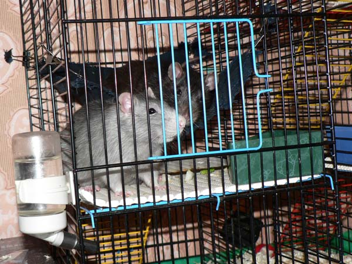
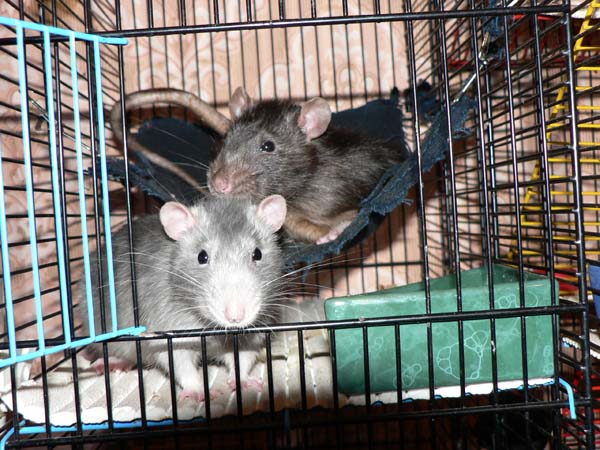
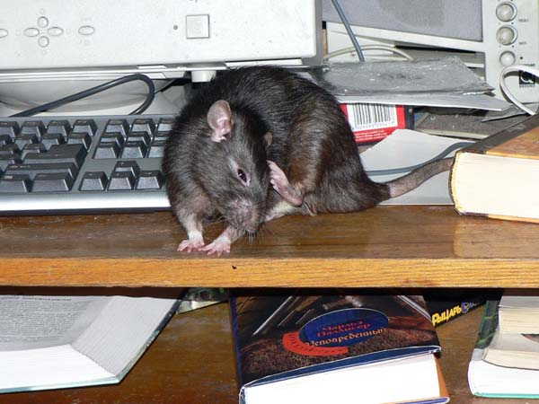
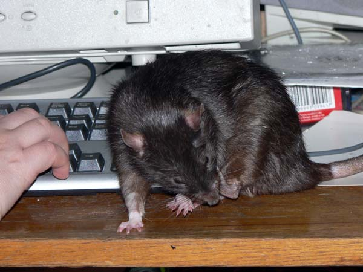
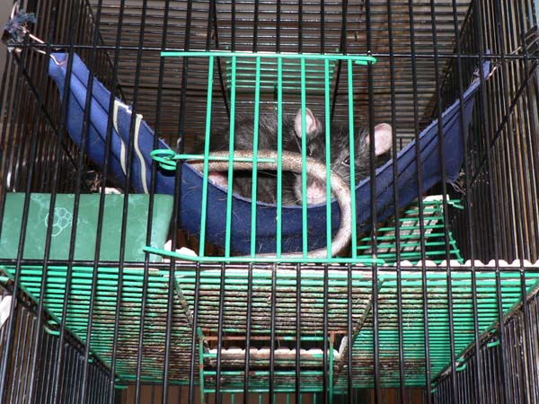

02-05 октября 2005
Мулька и Тимофей

— Тимка, смотри, нас фотают!

— Ой!

— Вот, Тимка, смотри — это пространство за домом называется "кухня"...
Мулька

— Согласно Уставу любой Боевой Крыс должен уметь делать зрачки кроваво-красными для устрашения противника. Показываю...

— Чесова заголовалась. Бешки вошкают?..

— Не стучите над ухом! Я занят!

— Ща анекдот расскажу. Знаете, откуда в магазинах появляются куриные окорочка? Когда курица попадает в капкан, гордая птица отгрызает себе ногу — вот так...

— А кто грыз сетевой кабель?

— Не смотрите на меня, я стесняюсь. Но книжка очень уж вкусная...

— Ну и ладно, пойду еще что-нибудь почитаю...
Джет

— Да, хвостом удобно прикрывать глаза, когда
спишь...